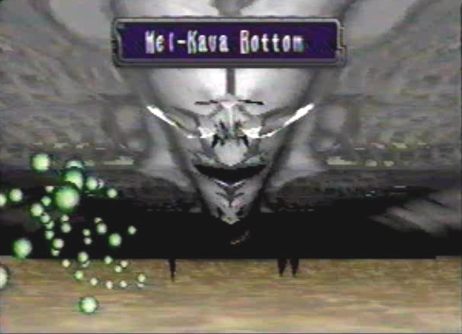
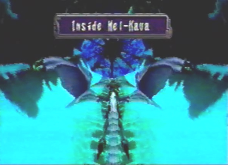
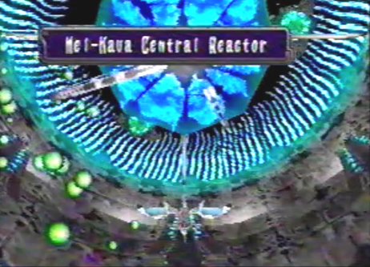
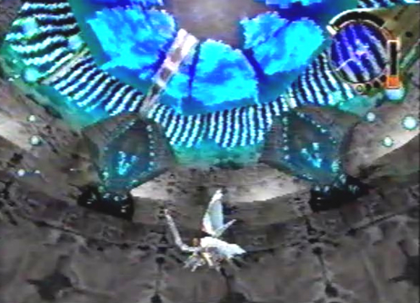
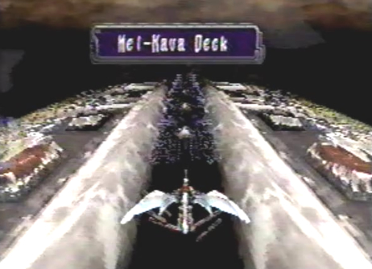
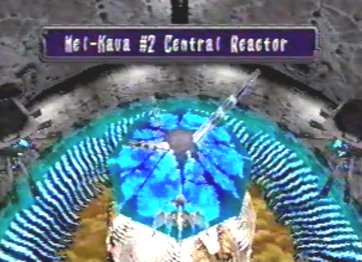

|
Items Found/See Divine Overview/Area Map(s)/None |
|
Diary Entry 22: Mel-Kava "God's Carriage" As I drew closer to the massive ship Mel-Kava, I could see that it was just as big as Vaiman's ass! It deserved to be destroyed! Advancing further towards the ship, lead us into a sequence of battles against Ancient Age Monsters. After the battles, we arrived at Mel-Kava's bottom. To demolish this thing, I knew I would have to attack it from the inside. Energy particles spewed out of the left and right exhaust ports, located to the far back of the ship. I had the dragon quickly lock-on and destroy them. Moving along Mel-Kava's bottom, soon brought us to an impassable barrier. A monster soon descended from above and lowered itself within the protection of a barrier. None of our attacks were sufficient enough to break through the barrier, so we retreated. There had to be a way to shut the force field off. We found an opening above us and immediately flew inside Mel-Kava. Once inside, a long corridor with strange doors awaited us. After passing through two of the strange doors, we had to fight a spider-like monster. After it was defeated, we made our way into a yellow door, located at the end of the corridor. Inside, we found the reactor that was supposedly providing power to the impassible barrier. We destroyed it's central core, causing the reactor to explode. We then proceeded to head back to Mel-Kava's bottom, and found that the reactor was indeed providing power to the barrier. It was now down! The monster from before descended once more, this time without the protection of the barrier. The dragon destroyed it with ease! As we flew further north, the dragon and I were caught up in giant mechanical arms and shot up into another section deep inside Mel-Kava. We flew through the many corridors, fighting some more of those spider-like monsters along the way. An elevator brought us up to a second level. At the end of this second level, we stumbled upon Mel-Kava's central reactor. It was emitting light particles. As long as we stayed under the surrounding platforms, we were shielded from them, and had no problems destroying the spinning mechanism atop the reactor. Once the spinning mechanism was destroyed, the entire reactor went along with it. After it was destroyed, we ascended to an area above. The ship was still emitting light particles! I thought I had destroyed it's one and only power source. Directly in front of us was another type of reactor, a giant one at that! I knew taking down this ship wasn't going to be that easy. It took a while, but with multiple shots from the dragon's lock-on lasers, it was soon destroyed. We then flew above to Mel-Kava's deck. By destroying the reactor below, we eliminated one set of exhaust ports located on the left and right sides of the deck. There were ten exhaust ports, and four more reactors left. Every time we destroyed a set of two exhaust ports on the left and right sides, the corresponding reactor below, would also be destroyed. When the final two exhaust ports located at the far end were destroyed, a path leading deeper inside Mel-Kava was revealed. As we entered a new area, I stopped a moment to ponder why the ship was still flying. I mean I had just destroyed six reactors! What more did I need to do?! The area I found myself in looked familiar. It was a second reactor! This had to be the final one. Destroying it would have to take the ship down! Surrounding the reactor, was a group of Mel-Kava's reactor guardians. Shooting them in the neck was the only way to destroy them. They also had to be destroyed due to the massive amount of energy particles they were emitting. When each one was destroyed, a platform lowered down in their place. With the guardians destroyed, we positioned ourselves over one of the platforms and began our assault on the spinning mechanism located above the reactor. It was easily destroyed, with the dragon's lock-on lasers. The reactor exploded, shooting thick streams of light every which way. With the destruction of the second reactor, came Mel-Kava's downfall. We had succeeded in destroying "Gods Carriage", and the fog it once created soon dissipated. The path to the Tower was finally revealed to us! Azel soon came to greet us, but not in such a nice manner. She wanted to kill us again of course, and I had no choice but to fight her yet again for the... How many times was it again? Oh, forget it I've lost track! I had to find a way to take down Atolm without hurting her. I just barely succeeded in coming out of the battle alive. Azel and Atolm weren't so lucky and proceeded to fall to their deaths. I had but one chance to save her! The dragon dived downward, and before I could begin to comprehend how I was going to catch her, Atolm, her dragon, surrounded her with a force field and she landed gently into my arms. Soon after, I departed for Zoah and came to the realization that the Empire had gotten their before me! I watched in horror as they shot a destructive beam of light directly at the Village. Zoah was turned into the blackest ash. Everyone was dead! I couldn't except what had just happened! I had no choice but to retreat for the time being. I brought Azel to safety and set up camp. She was unconscious and was unresponsive. It looked like I would have to fight the Empire alone. Before heading off to the Imperial Air Force Base, I decided to explore Georgius. Maybe I would find a source of great power to unleash upon the Empire, just maybe... |
|
| Divine
Overview |
1. Mel-Kava awaits! Something as big as Vaiman's ass deserves to be destroyed! |
2. As you advance towards the ship, you will have to fight a sequence of battles against: two waves of Lazara, Drones, Scavengers, and another wave of Drones. |
 3. After the sequence of battles you will arrive at Mel-Kava's bottom. |
4. Make sure to dodge those pesky energy particles spewing out from the left and right exhaust ports, to the far back. |
5. It's best to just destroy the exhaust ports, so they won't give you any trouble in the future, when you return here. |
6. Moving along Mel-Kava's bottom will eventually cause a battle against the sub-boss: Photon Cannon, to ensue. None of your attacks are sufficient enough to break the barrier surrounding it, so you'll have to find the source of its power, and disable it. |
| 7. After you escape the battle, head on up into the opening above. |
 8. You will now be inside Mel-Kava. |
9. As you fly through two doors within the corridor, you will have to fight... |
10. A PLASMA SPIDER! It's a force to be reckoned with. See the Hostile Enemies section, to find out what you need to do, to safely defeat it. |
11. After the battle, be sure not to miss the Recover X 3 hanging above. |
12. You will soon come to a Save Device. Save your game. When you fly through the yellow door, you will have to fight the sub-boss: Auto Defense System. |
| 13. Destroy the reactors core! |
14. Now fly back to Mel-Kava's bottom. |
15. Since you destroyed the reactor, the barrier is now down. |
16. Now destroy the sub-boss: Photon Cannon once and for all! |
17. Continue to fly north, along Mel-Kava's bottom. You can take one of two routes. Route 1: dodge the mechanical arms. |
18. Now enter the opening to the far back. This will take you directly to Mel-Kava Central Reactor. Or... |
19. You can take Route 2, by letting the mechanical arms lift you up. This route will take you further inside Mel-Kava. I strongly suggest you take Route 2. You can find an assortment of items, as well as gain some more battle experience, from fighting more Plasma Spiders. |
20. Item List 1. Olfactory Lobe X 1 2. Berserk Maxis X 1 3. Restore Speed X 1 |
21. When you get to the end of the corridor, take the elevator up to the next level. This level contains three more items, as well as a few more Plasma Spider battles. |
22. Item List 2 1. Olfactory Lobe X 1 2. Telepathy Shard X 1 3. Anesthetic X 1 |
 23. Passing through the yellow door will bring you to Mel-Kava Central Reactor. You must completely destroy this reactor. |
 24. First, shoot all of the surrounding platforms, so that they are facing up. Note, If you shoot the central reactor above you, you will be shot back and potentially thrown into the range of the particles. |
25. Second, position yourself under any one of the surrounding platforms and continually lock-on and fire at the spinning mechanism, located on top of the central reactor. |
26. Destroying the spinning mechanism, will cause the entire reactor to explode! |
| 27. You will now find yourself in front of a Light Energy Reactor. |
28. Lock-on to this reactor and shoot multiple lasers at it, until it is destroyed. |
 29. Edge and the dragon will now fly upward to Mel-Kava's deck. |
30. By destroying the first Light Reactor, you eliminated one set of exhaust ports located on the left and right sides of the deck. There are ten exhaust ports, and four Light Reactors left. Every time a set of two exhaust ports on the left and right sides are destroyed, the corresponding Light Reactor below will also be destroyed. Watch out for the energy particles! |
|
31. Once you destroy the final two exhaust ports at the far end, a new path leading deeper into Mel-Kava will be revealed. |
 32. You will arrive at Mel-Kava # 2 Central Reactor. You must now destroy this final reactor, in order to completely destroy Mel-Kava. |
33. First, shoot all of Mel-Kava's surrounding # 2 central reactor guardians in the neck. This will cause them to blow apart. Second, for every # 2 central reactor guardian that is destroyed, a platform will lower. Third, position yourself on top of any of the surrounding platforms, and take out the spinning mechanism located on top of the central reactor, just like before. Fourth, once the spinning mechanism is destroyed, the reactor will explode. Lastly, with Mel-Kava's final reactor gone, the ship will be completely destroyed! |
|
34. After the ship is destroyed, the fog it once created, will now dissipate revealing the way to the Tower. Azel won't let you get to the Tower so easily and you will have to do battle with her, facing the boss: Atolm Dragon once again. |
35. When the battle is won, your dragon will now upgrade to Dragon Eye Wing. You are now laser rank level four. |
36. Azel and Atolm fall to the ground below, and Edge tries to save her. Lucky for him, Atolm surrounds Azel with a force field and she lands nicely in his arms. |
37. As Edge and the dragon fly back towards Zoah, they find that the Empire has also arrived. And it's not to say "hellow"... |
38. It's to say, "good-bye suckers!" Zoah is completely decimated, and nothing but ash is left. It's not likely that anyone survived. |
39. Edge and Azel rest at camp. Azel is unconscious and is not responding. |
40. With your newly acquired laser rank of level four, it's time to take care of some unfinished business back at Georgius. |